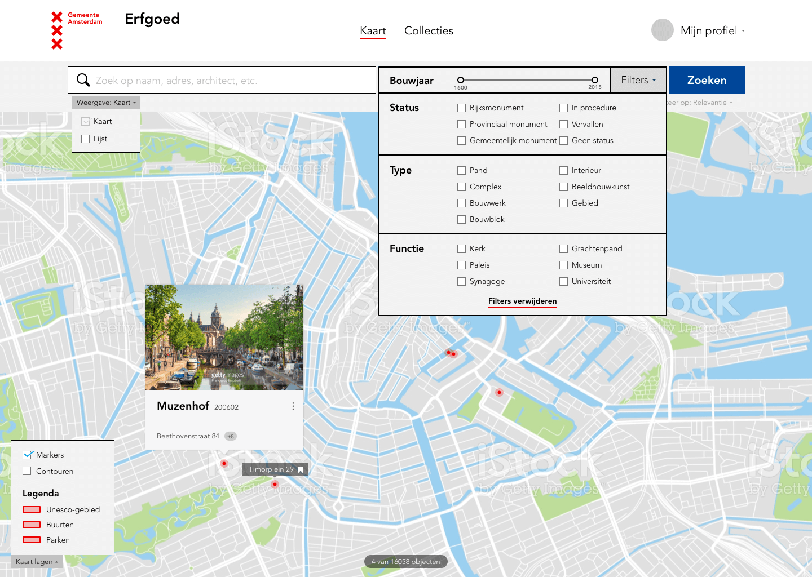

Met ruim 9.500 rijks- en gemeentemonumenten is Amsterdam koploper met het aantal monumenten binnen de gemeentegrenzen. Sinds de jaren 50 zorgt Monumenten en Archeologie Amsterdam voor het in kaart brengen, in beeld brengen en beschermen van deze monumenten. Rond de millenniumwisseling is gestart met een grote digitalisatieslag van het archief. Eerst voor intern gebruik en begin 2017 is besloten deze data ook publiek toegankelijk te maken.
Periode: 2017 – 2018
